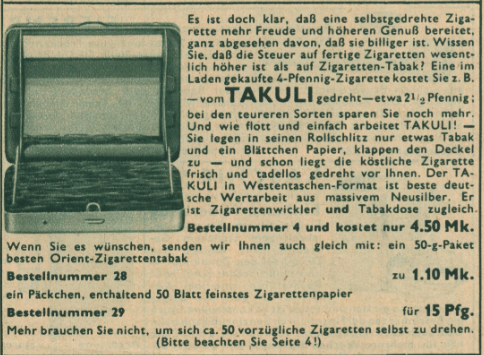
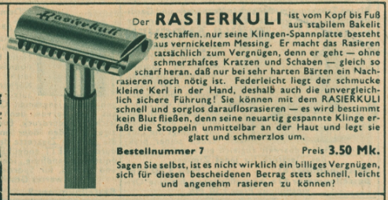
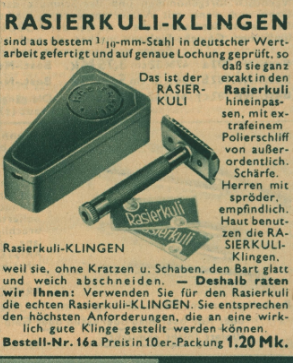

Wieso 'Kuli' für 'Kugelschreiber'?
Ein ungewöhnliches Kurzwort
Stand: 18.05.2026
Heute versteht man unter einem Kuli ein Kurzwort für Kugelschreiber.
Die Herleitung könnte ein Mischkurzwort sein: Kugelschreiber .
Auch liegt die Annahme nahe, er sei von boli (bolígrafo) aus dem Spanischen inspiriert, schließlich kommt der Kugelschreiber aus dem spanisch sprechenden Argentinien.
Doch die Herkunft des Kuli geht viel weiter zurück und ist nur ein glücklicher Zufall.
"Kuli" entstand im 19. Jahrhundert als Bezeichnung für ungelernte, schlecht bezahlte körperliche Lohnarbeiter aus dem asiatischen Raum.
Zur möglichen Wortherkunft siehe Wikipedia:Kuli.
Aufbauend darauf wurde der Begriff "Tintenkuli" gebildet, der bereits 1900 abwertend für eine Art Lohnschreiber verwendet wurde.
Bezeichnet wurden so Journalisten, welche keinen journalistischen/qualitativen Anspruch aufgrund von Käuflichkeit oder Folgsamkeit besaßen.
Die "Tintenkuli Handels-G.m.b.H." (1928, ab 1936 Riepe-Werk, um die 60er dann rotring-Werke Riepe) übernahm diese Wortgestalt dann 1928 für ihren Firmennamen und auch ihr erstes Produkt. Auch den "Kuli"-Begriff an sich meldete man an.


Das Produkt Tintenkuli war ein sogenannter Stylograph, ein Füller mit Röhrchen statt Feder. Kugeln konnten damals noch nicht genutzt werden.
Man münzte den Kuli-Begriff für einen menschlichen Arbeiter also auf ein Schreibwerkzeug um.
Diese Brücke schlägt auch die Personifizierung des Tintenkulis, welche 1938 eingetragen wurde:


Der Tintenkuli stellt sich vor: Ganz günstig sei er, und 'eine Woche kostenlos zur Probe arbeiten' biete er an.
Wie der menschliche Kuli ist der Tintenkuli Rotrings also günstig und arbeitet unaufhörlich.
Der 1939 eingetragene Tintenknecht und Tintendiener macht den Wortursprung noch klarer.


Und um 1949 bewarb eine menschliche Kuli-Figur Rotrings Produkte:

Rotring nutzte den Kuli-Begriff nicht nur für ihren Tintenkuli, sondern auch für:
|
Kuli-Tintenflasche(1930s), -Tintenpulver(1930s), -Tinte (spätestens 1940) Tinte für den Tintenkuli |
|
Schreibkuli (1942) ? |
|
Farbstiftkuli (1938), 4-Farb-Kuli (1952), 4-Farb-Tikk-Kuli, ... Mehrfarbbuntstifte- und kugelschreiber. |
| Rollkuli. (1949) Tintenschreiber mit Kugelspitze (eine Art Mischung aus Kugelschreiber und Füllfederhalter). |
| Bleikuli. (1949) Automatischer Druckbleistift. |
| Tikk-Kuli (1949) Kugelschreiber mit Druckmechanismus. ('Tikk' soll wohl ein Onomatopoeia sein) |
|
Tusch-Kuli (1954) Tusche-Stift? |
Auch für Gebrauchsgegenstände außerhalb der Schreibgerätewelt versuchte Rotring bzw. das Riepe-Werk zeitweilig den Kuli-Begriff.
So gab es 1937 einen Rasierer Rasierkuli, dessen Ersatzklingen Rasierkuli-Klingen und auch eine Kombination aus Zigarettenwickler und Tabakdose namens Takuli.



Das Muster, Komposita mit Kuli für Werkzeuge zu bilden, war nicht nur bei Rotring beliebt.
Neben dem Tintenkuli ist der Rollkuli ebenfalls wohl keine Eigenkreation Rotrings.
Noch heute bezeichnet "Rollkuli" einen Gepäckwagen an Umschlagplätzen, oder findet in der Landwirtschaft als Rollhacke in der Bodenbearbeitung Anwendung.

Außerhalb dieser Nutzungen findet sich der Rollkuli teils synonym mit Transport-Kuli als Bezeichnung für diverse Transportgeräte aus z. B. Landwirtschaft und Metallbearbeitung.
Obwohl von Rotring bzw. dem Riepe-Werk nach dem 2. Weltkrieg also verschiedenste Arten von Schreibinstrument als Kuli bezeichnet wurde, und sogar Hilfsmittel außerhalb der Schreibbranche als Kuli bekannt waren, setzte sich in der Bevölkerung aus Gründen der Sprachökonomie durch die Ähnlichkeit des Wortes zu Kugelschreiber wohl von selbst die Nutzung von "Kuli" als Kurzwort für "Kugelschreiber" durch.
Ressourcen zur weiteren Recherche:
Fountainpennetwork: Viel mehr Infos zum Tintenkuli (sehr gute Quelle)
Unofficialrotring: Tikk-Kuli
Unofficialrotring: Blei-Kuli
Meine Liste von Rotring-Mehrfarbstiften
Graphography: Rotring-Mehrfarbstifte
Rotring Museum: Einige Fakten zur Geschichte (nur oberflächlich)
Drawing-instruments.groups.io: Rotring-Katalog 1937 und andere